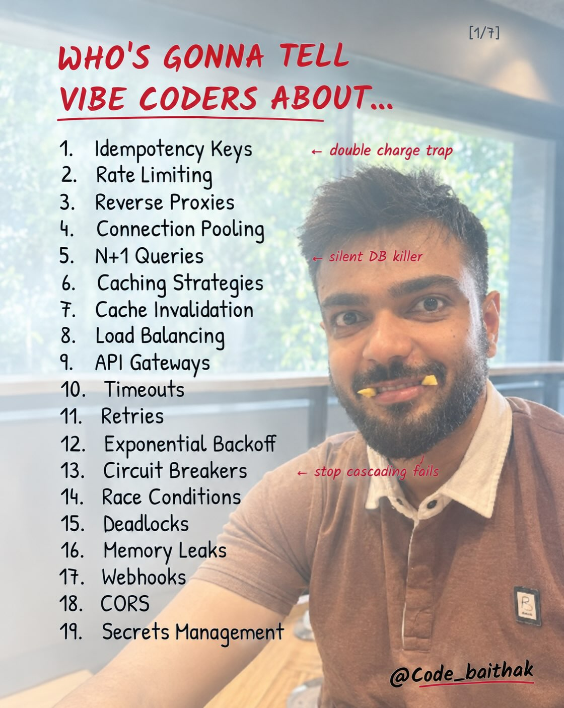
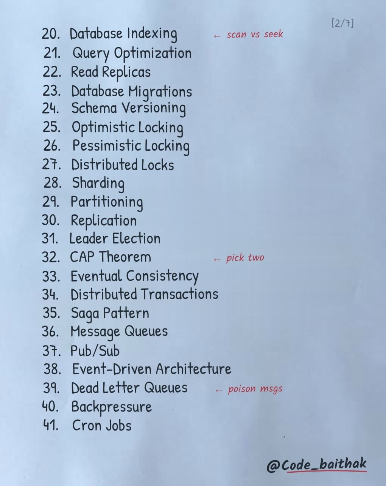
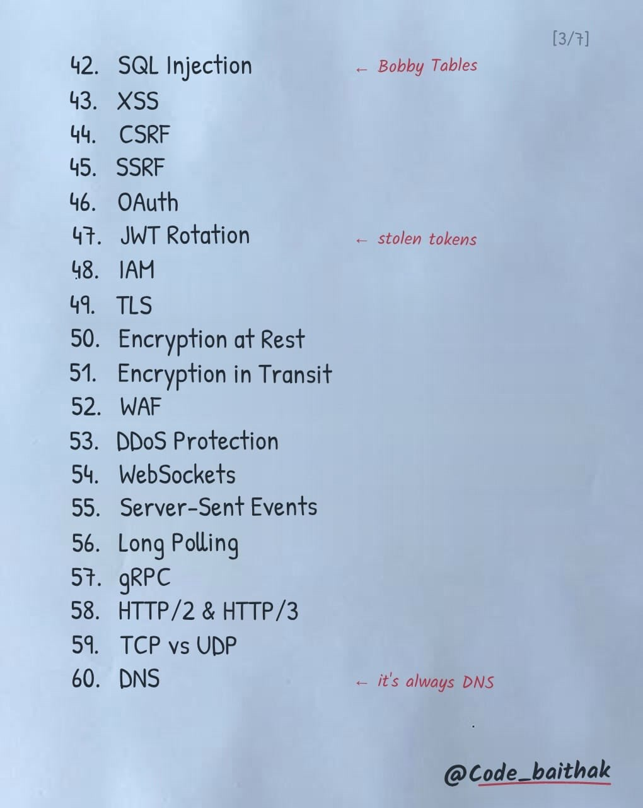
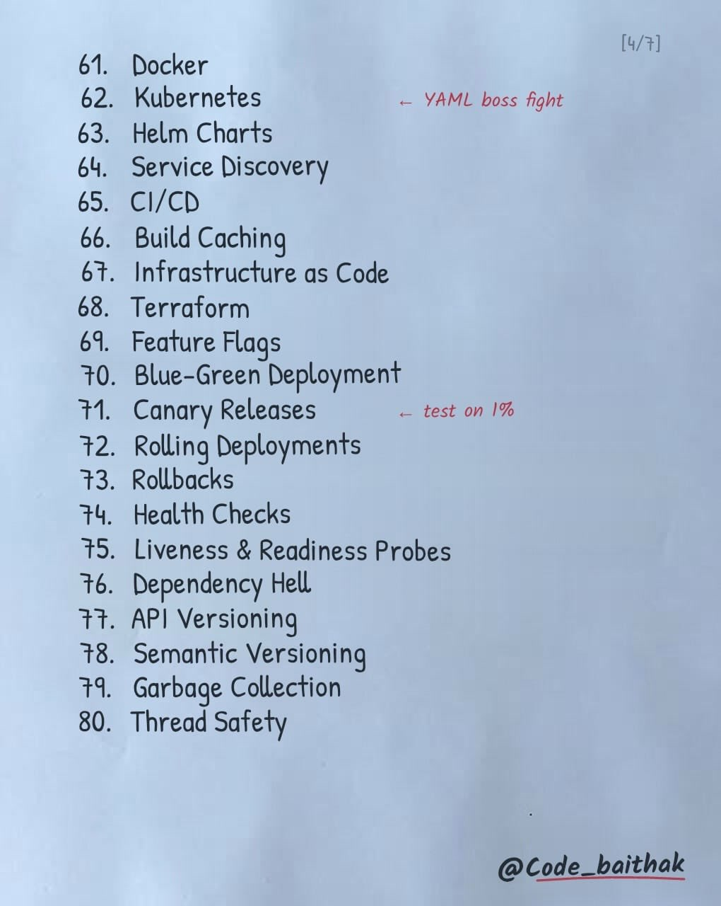
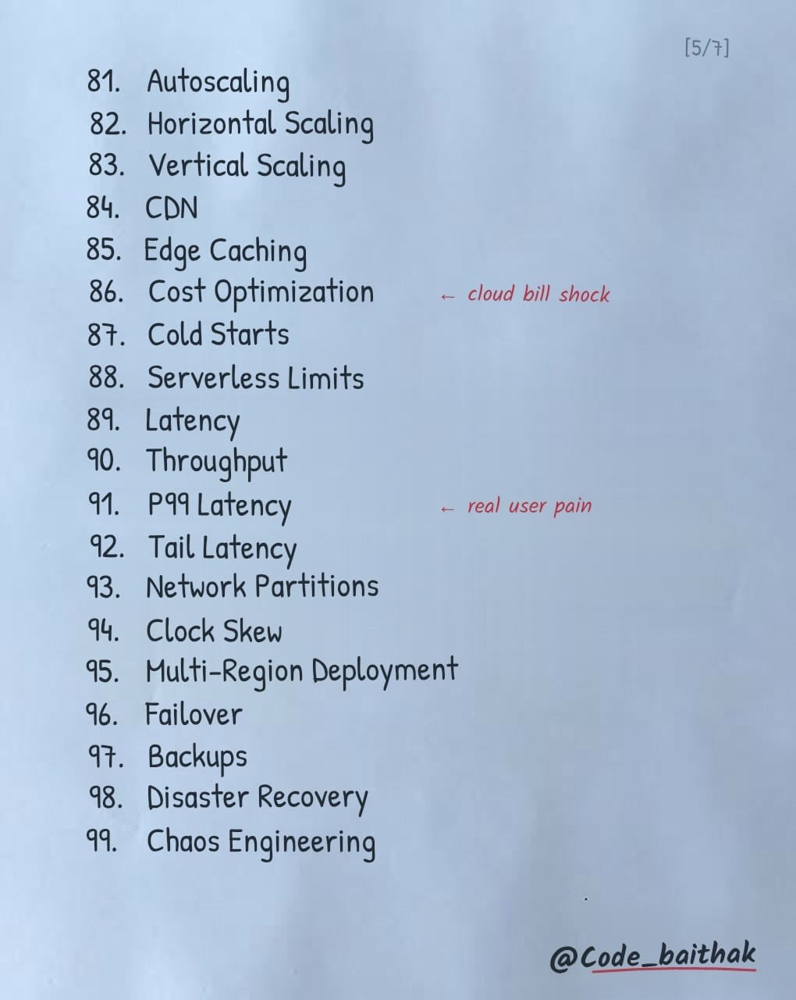
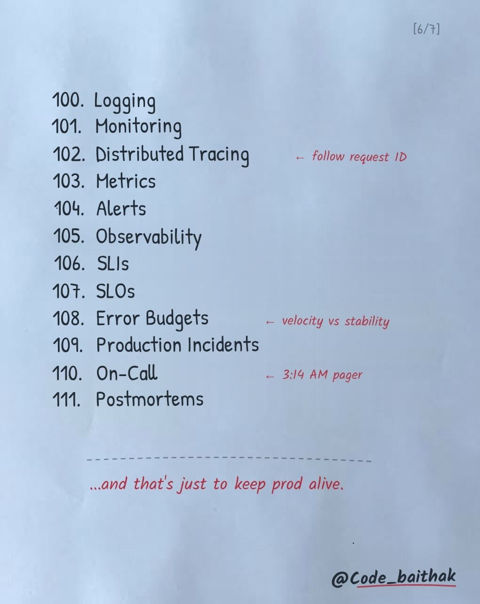
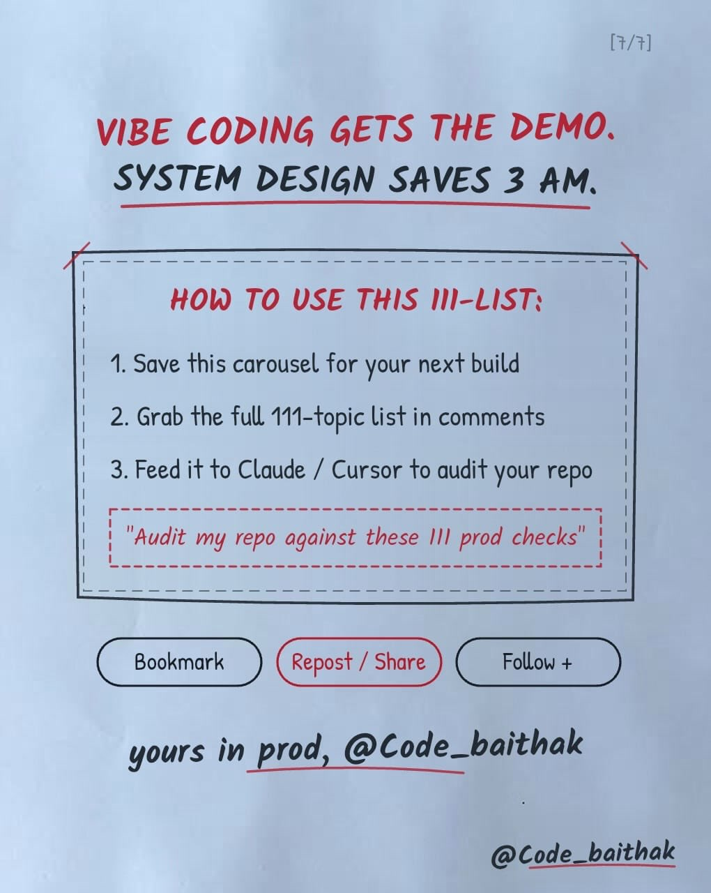

Engineering · Production-Readiness
Vibe Coding Gets the Demo, System Design Saves 3 AM: The 111-Point Production Readiness Checklist
Key Takeaways
- Vibe Coding vs Production Reality: AI coding assistants (Claude Code, Cursor, Copilot) make it trivial to generate a working prototype demo in hours, but completely omit resilient distributed systems plumbing required to keep production alive under scale.
- The 111-Point Architecture Audit: A comprehensive 6-pillar production readiness checklist spanning API resilience, database concurrency, zero-trust security, DevOps deployment, cloud latency economics, and SRE observability.
- Automated Agent Audit Prompt: Feed the standardized 111-point list into your coding agent (Claude / Cursor / Antigravity) with the prompt: "Audit my repository against these 111 production readiness checks and report critical vulnerabilities before shipping."
The "Vibe Coding" Vulnerability
In modern AI-assisted software development, developers rapidly stitch together frontend UIs, server actions, and database schemas. However, AI code generators write code for the "happy path." They rarely auto-generate idempotency keys, connection pool ceilings, circuit breakers, dead-letter queues, or distributed lock timeouts.

The 111 Production Readiness Checks
Pillar 1: Core API & Application Resilience (Checks 1–19)
| # | Production Check | Failure Mode Prevented | Practical Implementation |
|---|---|---|---|
| 1 | Idempotency Keys | Double charge trap / duplicate order creation | Store Idempotency-Key header in Redis with 24h TTL; reject duplicates. |
| 2 | Rate Limiting | API exhaustion, brute force, DDoS | Token bucket / sliding window via Redis (e.g. Upstash Ratelimit). |
| 3 | Reverse Proxies | Exposing origin servers directly | Cloudflare, Nginx, or Envoy fronting upstream workers. |
| 4 | Connection Pooling | Database connection exhaustion crash | PgBouncer, Prisma Accelerate, or Supabase connection pooling. |
| 5 | N+1 Query Detection | Silent database killer | Eager loading, DataLoader pattern, or batched JOIN queries. |
| 6 | Caching Strategies | Database saturation under read load | Cache-aside, read-through, or write-behind patterns. |
| 7 | Cache Invalidation | Serving stale or corrupt business data | Explicit event-driven invalidation or deterministic cache tags. |
| 8 | Load Balancing | Single server failure causing total outage | Round-robin, least-connections, or IP-hash traffic distribution. |
| 9 | API Gateways | Scattered auth and routing logic | Centralized JWT verification, SSL termination, and rate limiting. |
| 10 | Timeouts | Zombie connections blocking thread pools | Strict client (5s) and upstream service (2s) timeout configurations. |
| 11 | Retries | Transient network blips failing user operations | Retry failed idempotent requests (HTTP 502, 503, 504). |
| 12 | Exponential Backoff & Jitter | Thundering herd problem crashing recovering servers | backoff = min(max_delay, base * 2^attempt + random_jitter). |
| 13 | Circuit Breakers | Cascading failures across downstream services | Halt calls when error rate > 50%; fail fast or return cached fallback. |
| 14 | Race Conditions | Inconsistent balance updates & inventory overselling | Atomic DB operations (UPDATE ... SET balance = balance - 10 WHERE balance >= 10). |
| 15 | Deadlocks | Mutually blocked database transactions | Consistent resource lock ordering across all queries. |
| 16 | Memory Leaks | Gradual server crash under continuous load | Unclosed event listeners, unbounded in-memory maps, file descriptor leaks. |
| 17 | Webhooks | Missed third-party event notifications | HMAC signature verification and durable idempotency storage. |
| 18 | CORS | Cross-origin API exploits / frontend blocked | Restricting Access-Control-Allow-Origin to explicit trusted domains. |
| 19 | Secrets Management | Leaked API keys in frontend bundles or git history | AWS Secrets Manager, Doppler, Infisical, or runtime environment variables. |
Pillar 2: Database & Distributed Systems (Checks 20–41)

| # | Concept | Core Architectural Rule |
|---|---|---|
| 20–22 | Indexing, Query Optimization & Read Replicas | Ensure index seeks rather than full table scans (EXPLAIN ANALYZE); offload heavy analytic reads to read replicas. |
| 23–24 | Database Migrations & Schema Versioning | Enforce zero-downtime expand-and-contract schema migrations; never drop columns in the same release. |
| 25–27 | Optimistic, Pessimistic & Distributed Locks | Use version columns for low contention; SELECT ... FOR UPDATE for high contention; Redis Redlock for cross-service locks. |
| 28–31 | Sharding, Partitioning, Replication & Leader Election | Partition tables by range/hash; maintain active-passive or active-active replication with consensus (Raft). |
| 32–35 | CAP Theorem, Eventual Consistency & Saga Pattern | Choose Consistency vs Availability during partitions; use compensating transactions (Sagas) across distributed microservices. |
| 36–41 | Queues, Pub/Sub, Dead Letter Queues & Backpressure | Decouple ingestion via message brokers (Kafka, SQS, RabbitMQ); route poison pill messages to DLQ; signal backpressure upstream. |
Pillar 3: Security & Networking (Checks 42–60)

- 42–45: Injection & Web Exploits: Parameterized SQL queries (prevent Bobby Tables), sanitizing HTML (XSS), anti-forgery tokens (CSRF), and metadata service protection (SSRF).
- 46–48: Identity & Access: PKCE-based OAuth 2.0 flows, short-lived JWTs with rotating refresh tokens, and least-privilege IAM policies.
- 49–53: Transport & Perimeter Defense: Mandatory TLS 1.3, AES-256 encryption at rest, Cloudflare Web Application Firewall (WAF), and volumetric DDoS scrubbing.
- 54–60: Protocols & Networking: Choosing WebSockets / SSE for live streaming, gRPC / Protobuf for low-latency internal RPC, HTTP/2 multiplexing, and redundant authoritative DNS.
Pillar 4: DevOps & Deployment Safety (Checks 61–80)

- 61–68: Infra & Delivery: Multi-stage Docker builds, Kubernetes manifests / Helm charts, CI/CD automated test gates, Docker layer caching, and Terraform Infrastructure as Code (IaC).
- 69–73: Release Strategies: Feature flags (LaunchDarkly / PostHog), Blue-Green zero-downtime cutover, Canary releases testing on 1% traffic before full rollout, automated 1-click rollbacks.
- 74–80: Runtime Probes: Liveness probes (restarting crashed containers), readiness probes (blocking traffic until warmup finishes), semantic versioning (SemVer), and thread safety in concurrent runtimes.
Pillar 5: Scaling, Latency & Disaster Recovery (Checks 81–99)

- 81–86: Elasticity & Economics: Horizontal pod autoscalers (HPA), Edge caching on CDNs, and preventing cloud bill shock through compute alarms and egress auditing.
- 87–92: Latency Engineering: Mitigating serverless cold starts, optimizing P99 and tail latency histograms instead of deceptive median averages.
- 93–99: High Availability: Handling network splits, clock skew (NTP synchronization), multi-region active failover, automated point-in-time recovery (PITR) backups, and deliberate Chaos Engineering failure drills.
Pillar 6: Observability & SRE (Checks 100–111)

- 100–105: Telemetry: Structured JSON logging, distributed OpenTelemetry tracing propagating trace IDs across microservices, metrics collectors, and anomaly alert thresholds.
- 106–108: Reliability Governance: Defining Service Level Indicators (SLIs), Service Level Objectives (SLOs), and utilizing Error Budgets to balance shipping velocity against stability.
- 109–111: Incident Management: Production incident runbooks, 3:14 AM on-call paging rotations (PagerDuty), and blameless post-mortems documenting root causes and preventative mitigations.
How to Audit Your Codebase with Claude / Cursor

Copy-Paste Production Audit Prompt
"Act as a Principal Site Reliability Engineer. Audit my repository against the 111 production readiness checks (Idempotency keys, Connection pooling, N+1 queries, Rate limiting, Circuit breakers, Dead letter queues, Zero-downtime migrations, P99 latency, and OpenTelemetry tracing). For every check, classify current status as [PASS], [WARNING], or [CRITICAL FAILURE], and provide the exact code diff required to harden the system."
Original Source Reference
Instagram Carousel: https://www.instagram.com/p/Dejl2VjiX5L/
Creator: @code_baithak (Code Baithak)
Caption: "Who’s gonna tell you 🤫 . . . #reel #reelviral #fyp #study #funny"